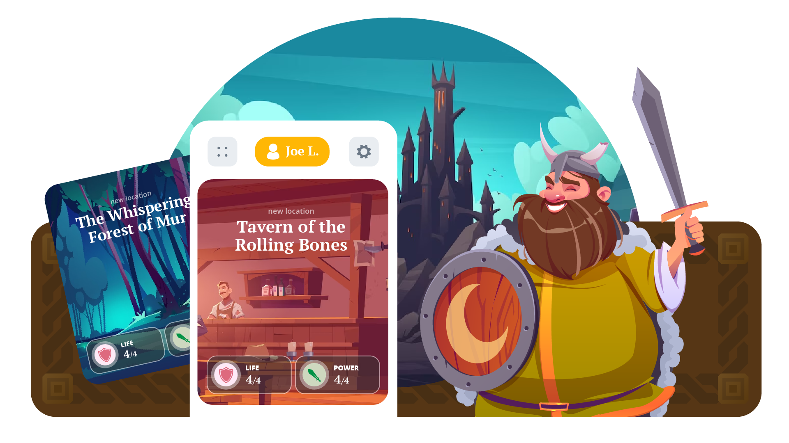
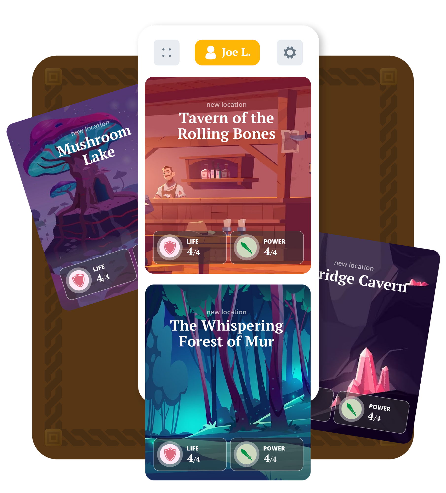

Fabletop
Fabletop is a virtual tabletop with a built-in rules system. First created as an in-browser game by Joe Lesko, this project aimed to turn the experience into a mobile app.
Using the same in-game elements such as locations, life, power, chat, etc... the mobile experience created a clean, user-friendly interface for playing on-the-go.

Note: This was a conceptual project.